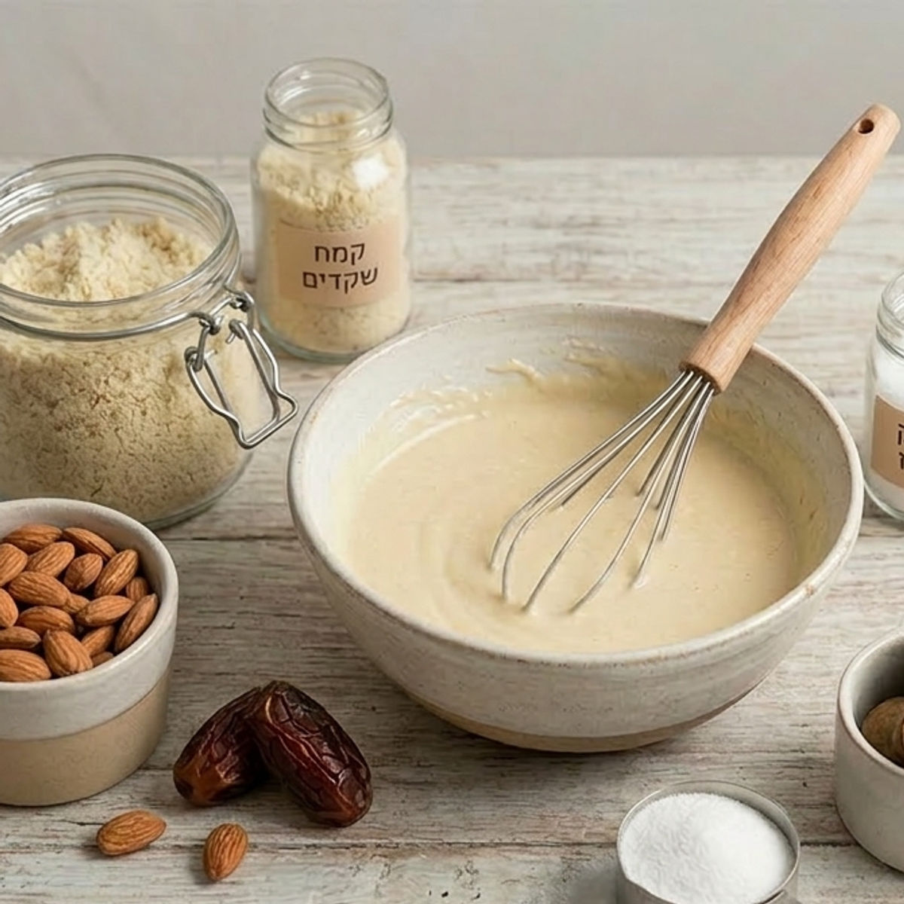
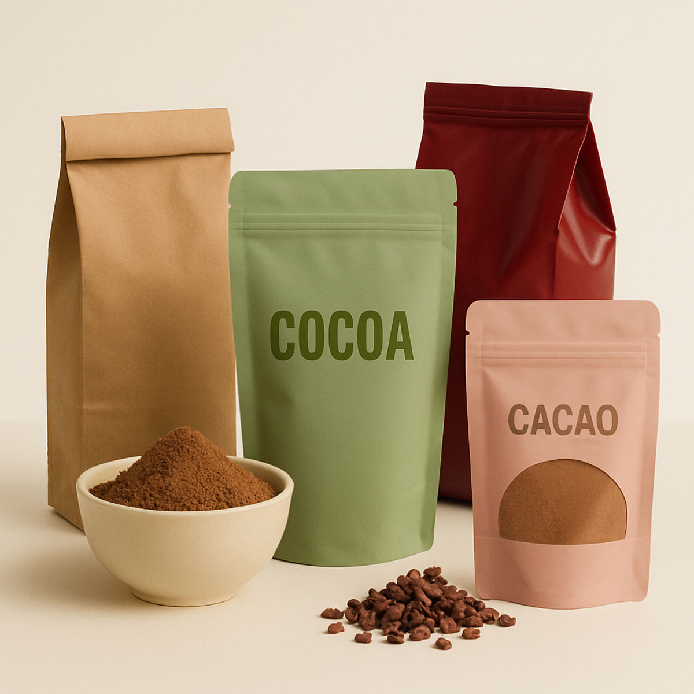
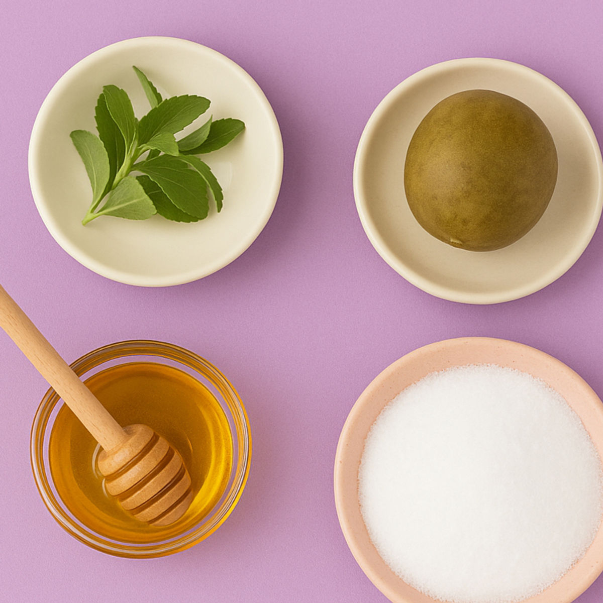

המדריך לחיים פשוטים ובריאים
כתבות, המלצות ותובנות יומיומיות

טיפים להמרת מתכונים רגילים לקינוחים בריאים ללא קמח וללא סוכר
אל תתנו לקמח ולסוכר להגביל אתכם – כך תהפכו כל מתכון קלאסי לקינוח בריא שמתאים בדיוק לתזונה שלכם

ג'לטין: הסוד הטעים לעור זוהר ומפרקים חזקים
מדוע ג'לטין קיבל מוניטין שלילי, למה אני מקפידה לצרוך אותו, ואיך הוא תורם לבריאות העור, המפרקים והמעיים
כמה צעדים פשוטים שיהפכו את החיים המשרדיים שלכם לבריאים יותר
להרגיש טוב גם אחרי יום מול המחשב

ריקוטה: "גבינת האלים" שאתם חייבים להכיר
היא עדינה, היא מתקתקה, והיא הסוד השמור של חובבי התזונה הבריאה. אם עדיין לא הכרתם את גבינת הריקוטה – הגיע הזמן להתאהב

האם הייתם רוצים להשתמש באבקת קקאו שהיא גם בריאה
המספרים שמסתתרים מאחורי האריזות

הממתיקים שמתויגים כבריאים מי נגד מי ואיזה מתאים לכם
בואו נעשה קצת סדר בין הסטיביה, הדבש, האריתריטול ופרי הנזירים